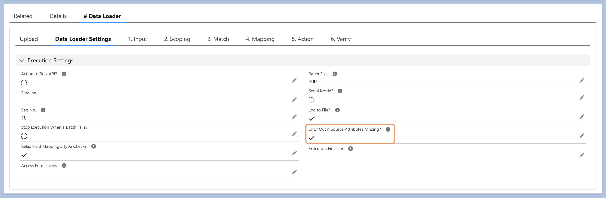

Yes. Enabling Error Out if Source Attributes Missing validates the uploaded file against the expected input data profile and fails the execution if any required columns are missing — ensuring the source file matches the expected schema before processing begins.
